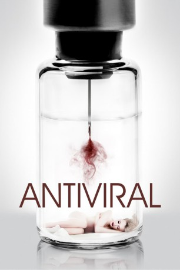
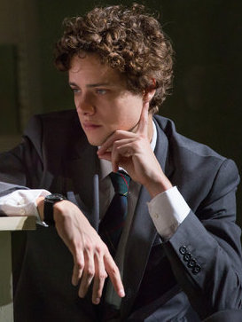

#9734 Antiviral
 
 IMDB-Wertung: 5.7 / 10
IMDB-Wertung: 5.7 / 10  Metascore: 0
Metascore: 0 
Syd March is an employee at a clinic that sells injections of live viruses harvested from sick celebrities to obsessed fans. Biological communion - for a price. Syd also supplies illegal samples of these viruses to piracy groups, smuggling them from the clinic in his own body. When he becomes infected with the disease that kills super sensation Hannah Geist, Syd becomes a target for collectors and rabid fans. He must unravel the mystery surrounding her death before he suffers the same fate.
Jahr: 2012
Dauer: 108 Minuten
FSK: 16
Land: Kanada Studio: Alive Vertrieb und MarketingTonspuren: DTS - ,
Untertitel:
Auflösung: 1080p (1920x1080) Größe: 4433 MB
Genre: Thriller, Horror, Sci-Fi
Regisseur: Brandon Cronenberg
Drehbuch: Brandon Cronenberg
Soundtrack: E.C. Woodley
Darsteller:
 Caleb Landry Jones als Syd March
Caleb Landry Jones als Syd March Sarah Gadon als Hannah Geist
Sarah Gadon als Hannah Geist- Lisa Berry als Lucas Clinic Receptionist
-  Douglas Smith als Edward Porris
- Nenna Abuwa als Aria Noble
- Adam Bogen als Lucas Clinic Security Guard
- Salvatore Antonio als Topp
- Katie Bergin als Talk Show Host
 Nicholas Campbell als Dorian
Nicholas Campbell als Dorian- Lara Jean Chorostecki als Michelle
- Reid Morgan als Derek Lessing
 Joe Pingue als Arvid
Joe Pingue als Arvid Dan Warry-Smith als Butcher
Dan Warry-Smith als Butcher- Tedd Dillon als Hotel Guard
 Milton Barnes als Vole & Tesser Employee
Milton Barnes als Vole & Tesser Employee- Sheila McCarthy als Dev Harvey
- Josh Holliday als Male Client
 Mark Caven als Luc
Mark Caven als Luc James Cade als Levine
James Cade als Levine- Jackie English als Waitress
 George Tchortov als Portland
George Tchortov als Portland Malcolm McDowell als Dr. Abendroth
Malcolm McDowell als Dr. Abendroth Wendy Crewson als Mira Tesser
Wendy Crewson als Mira Tesser- Ben Mulroney als Male cLife Host
- Tanya Kim als Female cLife Host
- Donna Goodhand als Woman in Waiting Room
- Matt Watts als Mercer
- Dawn Greenhalgh als Jane
- Elitsa Bako als Vera
- Jennifer Mote als Levine's Receptionist
- Ian O'Brien als Tex
- Lady Vezina als Famous Woman
- Kim Ly als West
- Raul Tome als Landlord
- Kerrigan Carbol als Buyer
- Andriy Haddad als Joshua
- Vincent Thomas als Security Guard (uncredited)
Datei: X:\2012(A-F)\Antiviral (2012, FSK16, 1920x1080).mkv seit 22.10.2018
Festplatte: HD 2012(A-M)
 Es gibt insgesamt 102 Filme in der Gruppe '2012(A-F)'
Es gibt insgesamt 102 Filme in der Gruppe '2012(A-F)'